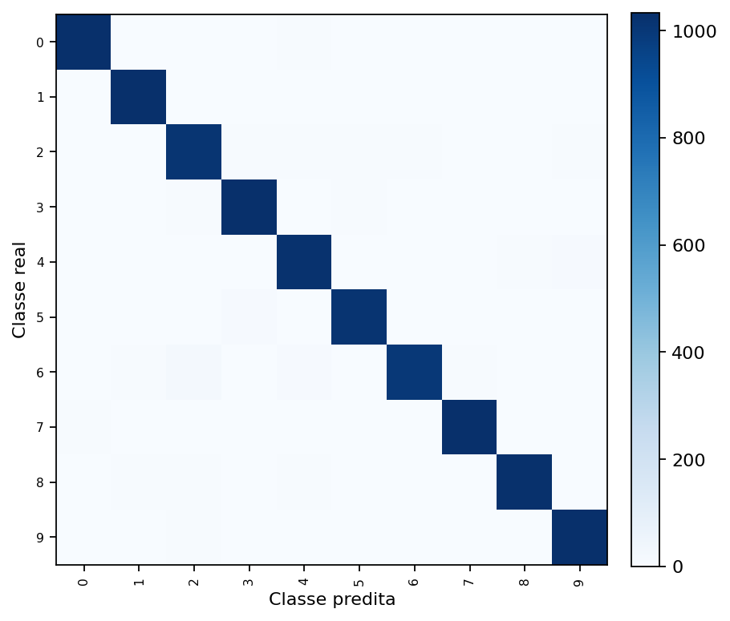
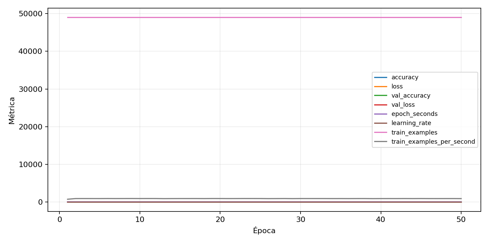

| n_samples | 10500 |
|---|---|
| loss | 0.14003662765026093 |
| accuracy | 0.9753333333333334 |
| balanced_accuracy | 0.9753333333333334 |
| macro_f1 | 0.975335793865724 |


| Índice | Classe | Suporte | Precisão | Recall | F1 |
|---|---|---|---|---|---|
| 0 | 0 | 1050 | 0.9866412213740458 | 0.9847619047619047 | 0.9857006673021925 |
| 1 | 1 | 1050 | 0.981904761904762 | 0.981904761904762 | 0.981904761904762 |
| 2 | 2 | 1050 | 0.9511737089201878 | 0.9647619047619047 | 0.957919621749409 |
| 3 | 3 | 1050 | 0.9772942289498581 | 0.9838095238095238 | 0.9805410536307546 |
| 4 | 4 | 1050 | 0.9615023474178404 | 0.9752380952380952 | 0.968321513002364 |
| 5 | 5 | 1050 | 0.9835589941972921 | 0.9685714285714285 | 0.9760076775431862 |
| 6 | 6 | 1050 | 0.9775171065493646 | 0.9523809523809523 | 0.964785335262904 |
| 7 | 7 | 1050 | 0.9735599622285175 | 0.981904761904762 | 0.9777145566619252 |
| 8 | 8 | 1050 | 0.9799426934097422 | 0.9771428571428571 | 0.9785407725321889 |
| 9 | 9 | 1050 | 0.9809885931558935 | 0.9828571428571429 | 0.9819219790675547 |
{"adapter":"kmnist","balance_mode":"all_raw","class_names":["0","1","2","3","4","5","6","7","8","9"],"dataset":"kmnist","dataset_options":{},"dataset_root":"/home/msduda/datasets-tcc/kmnist","native_channels":1,"normalization":"unit_interval","num_classes":10,"protocol":{"checkpoint_monitor":"val_macro_f1","dtype_policy":"mixed_float16","early_stopping":{"patience":50,"restore_best_weights":true},"evaluation_augmentation":false,"input_channels":"native","optimizer":"Adam","pretrained_weights":false,"reduce_lr_on_plateau":{"factor":0.3,"min_lr":1e-07,"patience":50},"resize":"proportional_padding","test_time_augmentation":false,"training_from_scratch":true},"seed":42,"source_fingerprint":"8928d478d8d23938a73b4f4a92c407bf3d74beff1e0e67e3644d6ecdc30cf828","source_manifest":{"class_names":["0","1","2","3","4","5","6","7","8","9"],"joined_samples":70000,"metadata":{"layout":"kmnist-component-npz"},"name":"kmnist","native_channels":1,"source_path":"/home/msduda/datasets-tcc/kmnist","splits":{"test":10000,"train":60000},"target_size":64},"target_size":64,"test_fraction":0.15,"train_fraction":0.7,"training":{"augmentation":{"brightness_delta":0.0,"contrast_lower":1.0,"contrast_upper":1.0,"cutout_max_frac":0.0,"cutout_prob":0.0,"flip_lr":false,"noise_std":0.0,"translate_frac":0.0,"zoom_max":1.0,"zoom_min":1.0},"batch_size":512,"default_image_size":64,"dtype_policy":"mixed_float16","early_stopping_patience":50,"extra_fraction":0.0,"image_size_overrides":{"gtsrb":128},"keras_verbose":1,"learning_rate":0.0003,"max_epochs":50,"preprocess_cache_max_mib":0,"reduce_lr_factor":0.3,"reduce_lr_min_lr":1e-07,"reduce_lr_patience":50,"shuffle_buffer_max_mib":0},"validation_fraction":0.15}
{"epochs_completed":50,"epochs_recorded":50,"evaluation_seconds":18.29398240699811,"fit_seconds_current_attempt":3112.3129154060007,"max_epoch_seconds":64.83974232000037,"max_epochs":50,"mean_epoch_seconds":52.585922439200225,"mean_train_examples_per_second":932.7211536261196,"median_train_examples_per_second":937.1040619371985,"min_epoch_seconds":51.53571583300072,"selected_checkpoint":"/mnt/e/tcc-benchmark/outputs/kmnist-alldata-noaug-batch-sweep-2026-08-06/batch-512/kmnist/runs/kmnist__unit_interval__all_raw__seed-42/checkpoints/best.keras","total_seconds":2629.296121960011,"training_seconds":2629.296121960011,"wall_seconds_current_attempt":3134.1997333670006}
{"elapsed_seconds":3134.249295226,"event_counts":{"data_preparation_end":1,"data_preparation_start":1,"epoch_end":50,"evaluation_end":1,"evaluation_start":1,"fit_end":1,"fit_start":1,"periodic":618,"run_completed":1,"train_start":1},"generated_at":"2026-08-08T11:42:30.778+00:00","gpu_backend":"pynvml","interval_seconds":5.0,"metrics":{"cpu_percent":{"count":676,"max":17.0,"mean":13.057544378698225,"min":0.0,"p50":13.4,"p95":16.2},"disk_data_free_bytes":{"count":676,"max":998270754816.0,"mean":998270693521.4202,"min":998270685184.0,"p50":998270693376.0,"p95":998270693376.0},"disk_data_percent":{"count":676,"max":2.7,"mean":2.7,"min":2.7,"p50":2.7,"p95":2.7},"disk_data_total_bytes":{"count":676,"max":1081101176832.0,"mean":1081101176832.0,"min":1081101176832.0,"p50":1081101176832.0,"p95":1081101176832.0},"disk_data_used_bytes":{"count":676,"max":27838136320.0,"mean":27838127982.57988,"min":27838066688.0,"p50":27838128128.0,"p95":27838128128.0},"disk_output_free_bytes":{"count":676,"max":207018049536.0,"mean":207005274651.26627,"min":207004176384.0,"p50":207005032448.0,"p95":207005282304.0},"disk_output_percent":{"count":676,"max":79.3,"mean":79.3,"min":79.3,"p50":79.3,"p95":79.3},"disk_output_total_bytes":{"count":676,"max":1000186310656.0,"mean":1000186310656.0,"min":1000186310656.0,"p50":1000186310656.0,"p95":1000186310656.0},"disk_output_used_bytes":{"count":676,"max":793182134272.0,"mean":793181036004.7338,"min":793168261120.0,"p50":793181278208.0,"p95":793182048256.0},"elapsed_seconds":{"count":676,"max":3134.192724,"mean":1570.2958560798816,"min":0.025756,"p50":1568.410977,"p95":2991.2616805000002},"gpu_count":{"count":676,"max":1.0,"mean":1.0,"min":1.0,"p50":1.0,"p95":1.0},"gpu_memory_percent":{"count":676,"max":51.92279815673828,"mean":51.56529697440785,"min":37.836313247680664,"p50":51.783180236816406,"p95":51.79157257080078},"gpu_memory_total_bytes":{"count":676,"max":8589934592.0,"mean":8589934592.0,"min":8589934592.0,"p50":8589934592.0,"p95":8589934592.0},"gpu_memory_used_bytes":{"count":676,"max":4460134400.0,"mean":4429425282.272189,"min":3250114560.0,"p50":4448141312.0,"p95":4448862208.0},"gpu_temperature_c":{"count":676,"max":50.0,"mean":41.514792899408285,"min":38.0,"p50":41.0,"p95":49.0},"gpu_utilization_percent":{"count":676,"max":66.0,"mean":19.92751479289941,"min":1.0,"p50":10.0,"p95":58.0},"process_cpu_percent":{"count":676,"max":218.0,"mean":170.98062130177513,"min":0.0,"p50":178.75,"p95":210.425},"process_read_bytes":{"count":676,"max":10870784.0,"mean":10848231.76331361,"min":7933952.0,"p50":10870784.0,"p95":10870784.0},"process_rss_bytes":{"count":676,"max":3845541888.0,"mean":3657733429.0177517,"min":1029554176.0,"p50":3768506368.0,"p95":3831830528.0},"process_vms_bytes":{"count":676,"max":49774403584.0,"mean":49472131805.15976,"min":39580241920.0,"p50":49624092672.0,"p95":49707294720.0},"process_write_bytes":{"count":676,"max":1392640.0,"mean":1374401.8934911243,"min":4096.0,"p50":1392640.0,"p95":1392640.0},"ram_available_bytes":{"count":676,"max":15520911360.0,"mean":13060357435.076923,"min":12876492800.0,"p50":12947304448.0,"p95":13483100160.0},"ram_percent":{"count":676,"max":22.5,"mean":21.415236686390532,"min":6.6,"p50":22.1,"p95":22.5},"ram_total_bytes":{"count":676,"max":16619085824.0,"mean":16619085824.0,"min":16619085824.0,"p50":16619085824.0,"p95":16619085824.0},"ram_used_bytes":{"count":676,"max":3742593024.0,"mean":3558728388.923077,"min":1098174464.0,"p50":3671781376.0,"p95":3732379648.0}},"sample_count":676,"schema_version":1}